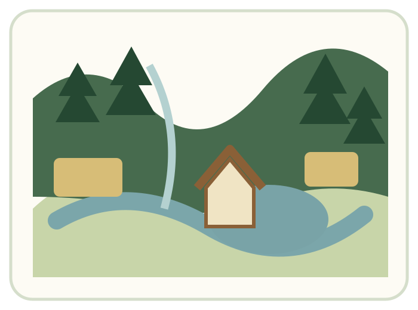

About the farm
Family-owned land with many uses
Hutton-Loyd Tree Farm is a family-owned tract of woodlands and farmland nestled in a picturesque Appalachian valley.
The roughly 1,100-acre property supports Christmas and landscape trees, hay and other farm crops, private events, and a diverse woodland ecosystem. The farm has grown Christmas trees and family traditions since the early 1980s.
Much of the property remains wooded, with miles of farm roads and trails, a private lake, wetlands, fields, and habitat for wildlife.
Walk the rows, breathe the cold air, and make a day of choosing the right tree in the valley.
Christmas at the farm
Find and cut your own tree
Each holiday season, the farm opens its gates for families to spend a day in the valley and choose a real Christmas tree.
Before you come
Seasonal details change each year
Opening dates, hours, prices, tree availability, concessions, and hayride schedules should be confirmed before traveling. The announcement bar at the top of this page is designed for the latest information.
The farm has historically offered choose-and-cut and pre-cut trees, wreaths and greenery, tree shaking and baling, and a shelter where visitors can warm up.
Typical visit
- Dress for a working farm and the weather.
- Follow farm signs and staff directions.
- Saws are normally available for choose-and-cut trees.
- Ask staff about shaking, baling, and loading.
- Water a cut tree promptly after bringing it home.
Fields and farm operations share the valley with woodlands, wetlands, and wildlife habitat.
More at Hutton-Loyd
A farm beyond Christmas
Landscape trees
Field-grown evergreens, shade trees, flowering trees, and shrubs have been sold to both retail and wholesale customers. Availability changes with the growing season.
Weddings & events
The valley, lake, old barn, and surrounding hills have hosted weddings, races, and other private events. Contact the farm about current availability.
Fishing
The farm includes a scenic private lake. Contact the farm directly for current information about fishing access or permits.
Cabin
Information about the farm cabin and any current availability is being updated. Please contact the farm for details.
Land stewardship
Working land and woodland habitat
The farm is not only a place of production. Its woods, fields, streams, wetlands, and lake form a connected landscape. Long-term care of the property includes growing trees as a renewable crop while maintaining habitat and the character of the valley.

Contact and directions
Confirm details before visiting
Replace the placeholders below with the farm’s current preferred phone number and email before publishing.
Update before launch
Phone: (000) 000-0000
Email: info@hl-treefarm.com
The historical site and third-party listings show conflicting phone numbers and addresses, so these should be verified rather than copied blindly.
General directions
From I-64 near Morehead, travel north on KY-32, turn onto KY-1013, then follow Big Run Road and farm signs. Use the map link for current routing.